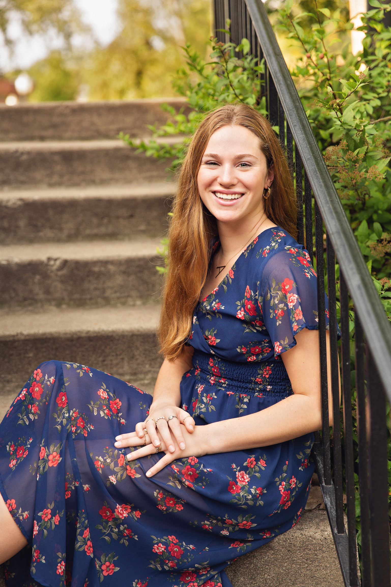

Student/Journalist
I write bi-weekly stories about lifestyle, music, mental health, and more health and wellness topics. I pitch story ideas, follow deadlines, and communicate with fellow staff writers and editors about stories.
I posted content on social media, including X and Instagram, and created the content using Adobe Illustrator and Canva. I would edit, approve, and create stories and posts for published stories on our website.
I hosted an entertainment and art news show called Drop the Pop. On the show, other hosts and I would discuss recent pop culture news and write an arts and entertainment news piece to read on the show. I orchestrated discussions during the show about a variety of topics.